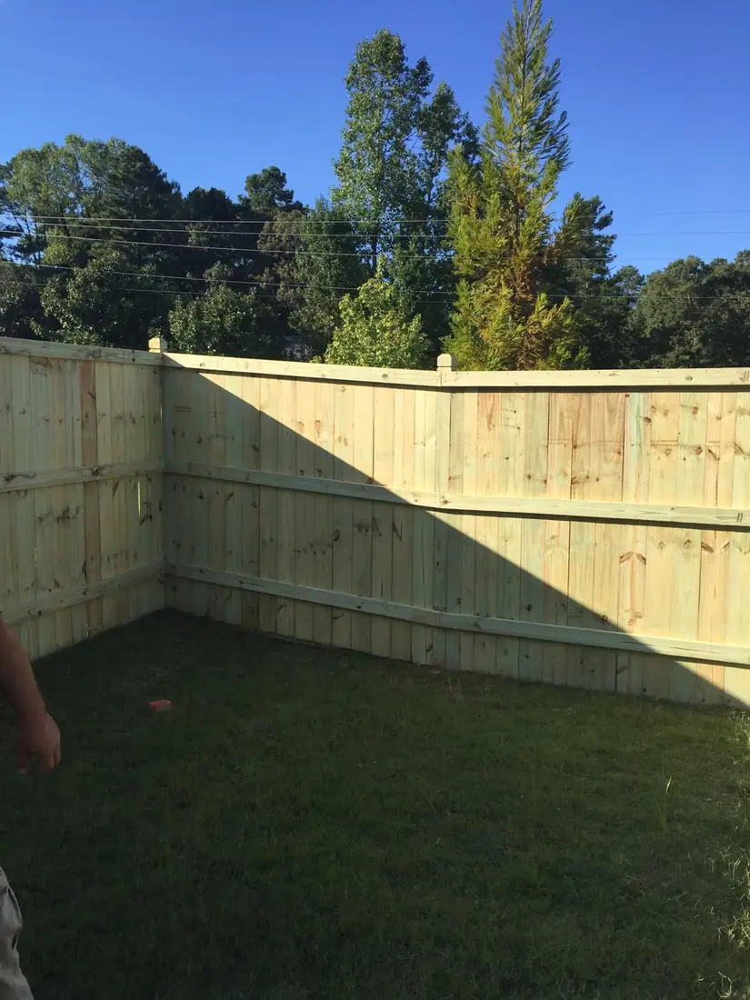
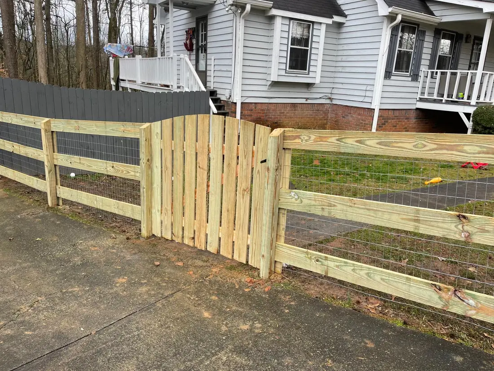
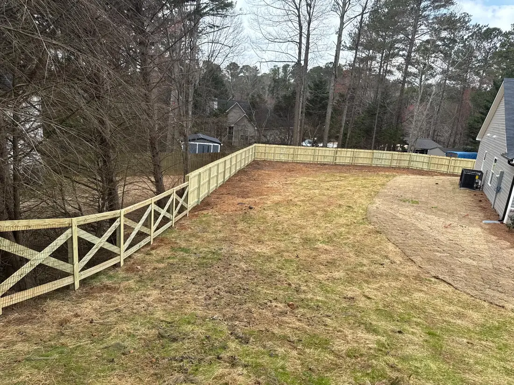

A fence is privacy, security, and peace of mind in one line down the yard. It keeps the neighbors' eyes out, keeps kids and pets in and off the road, and marks exactly where your property ends. It also just makes a house look finished.
We install privacy, picket, and chain link — each one suited to a different job. Privacy panels block the view, picket sets a clean boundary without walling everything off, and chain link keeps a yard secure at the lowest cost.
The part that decides whether a fence lasts, though, is under the ground: how deep the posts go and what holds them there.
The right fence for what you're actually fencing.
Fencing for privacy is a different job than fencing to keep a dog in. We match the type to the reason you're building — the view you want blocked, the yard you want secured, the line you want marked — instead of selling you the same panel for everything.
- Privacy, picket, and chain link
- Gates and hardware included
- Straight lines and level runs, even on a slope
- Repairs and section replacement


Posts set for Georgia clay, not against it.
A fence is only as straight as its posts, and a post set too shallow leans with the first season of rain. We dig to the right depth, set the posts in concrete, and use treated wood at the base where rot starts, so the line stays true for years.
We keep the run straight and the tops level even when the ground isn't — a fence that follows a sloppy grade is the first thing you notice from the street.
Before you dig
It's worth checking your HOA's rules and marking the property line first, and in Georgia you call 811 before any digging so underground utilities get located. We build to the line once it's clear.
Fences we've built around North Georgia.
Everything that comes with the job.
Privacy, picket & chain link
The right style matched to the job you're fencing for.
Straight, level runs
Lines kept true and tops kept level, even across a slope.
Posts set deep
Dug to the right depth and set in concrete for Georgia clay.
Gates & hardware
Gates, latches, and hardware built into the install.
Treated against rot
Treated wood at the base, where wood fences fail first.
Repairs & replacement
Fixing damaged sections, not just building new fence.
Fence installation, answered.
How long does a wood fence last?
Who checks the property line?
Do you repair existing fences or only install new ones?
How long does installation take?
Ready to close in the yard?
Send a photo on WhatsApp and we'll tell you what it takes and what it costs — no charge to ask.
The rest of what we handle.
Tree services
Removal, trimming, and storm cleanup — including tight-clearance drops.
See tree servicesStump grinding
Ground below grade so you can sod, plant, or pour right over it.
See stump grindingRetaining walls
Block and stone walls built with the drainage and base that keep them standing.
See retaining wallsIrrigation systems
Zoned installs, repairs, controller setup, and seasonal service.
See irrigation